一、本节引言：
上两小节我们学习了Drawable以及Bitmap，都是加载好图片的，而本节我们要学习的绘图相关的 一些API，他们分别是Canvas(画布)，Paint(画笔)，Path(路径)！本节非常重要，同时也是我们 自定义View的基础哦~好的，话不多说开始本节内容~
官方API文档：Canvas；Paint；Path；
二、相关方法详解
1)Paint(画笔):
就是画笔,用于设置绘制风格,如:线宽(笔触粗细),颜色,透明度和填充风格等 直接使用无参构造方法就可以创建Paint实例: Paint paint = new Paint( );
我们可以通过下述方法来设置Paint(画笔)的相关属性,另外,关于这个属性有两种, 图形绘制相关与文本绘制相关:
- setARGB(int a,int r,int g,int b): 设置绘制的颜色，a代表透明度，r，g，b代表颜色值。
- setAlpha(int a): 设置绘制图形的透明度。
- setColor(int color): 设置绘制的颜色，使用颜色值来表示，该颜色值包括透明度和RGB颜色。
- setAntiAlias(boolean aa): 设置是否使用抗锯齿功能，会消耗较大资源，绘制图形速度会变慢。
- setDither(boolean dither): 设定是否使用图像抖动处理，会使绘制出来的图片颜色更加平滑和饱满，图像更加清晰
- setFilterBitmap(boolean filter)： 如果该项设置为true，则图像在动画进行中会滤掉对Bitmap图像的优化操作， 加快显示速度，本设置项依赖于dither和xfermode的设置
- setMaskFilter(MaskFilter maskfilter)： 设置MaskFilter，可以用不同的MaskFilter实现滤镜的效果，如滤化，立体等
- setColorFilter(ColorFilter colorfilter)： 设置颜色过滤器，可以在绘制颜色时实现不用颜色的变换效果
- setPathEffect(PathEffect effect) 设置绘制路径的效果，如点画线等
- setShader(Shader shader)： 设置图像效果，使用Shader可以绘制出各种渐变效果
- setShadowLayer(float radius ,float dx,float dy,int color)：在图形下面设置阴影层，产生阴影效果， radius为阴影的角度，dx和dy为阴影在x轴和y轴上的距离，color为阴影的颜色
- setStyle(Paint.Style style)： 设置画笔的样式，为FILL，FILL_OR_STROKE，或STROKE
- setStrokeCap(Paint.Cap cap)： 当画笔样式为STROKE或FILL_OR_STROKE时，设置笔刷的图形样式， 如圆形样Cap.ROUND,或方形样式Cap.SQUARE
- setSrokeJoin(Paint.Join join)： 设置绘制时各图形的结合方式，如平滑效果等
- setStrokeWidth(float width)： 当画笔样式为STROKE或FILL_OR_STROKE时，设置笔刷的粗细度
- setXfermode(Xfermode xfermode)： 设置图形重叠时的处理方式，如合并，取交集或并集，经常用来制作橡皮的擦除效果
- setFakeBoldText(boolean fakeBoldText)： 模拟实现粗体文字，设置在小字体上效果会非常差
- setSubpixelText(boolean subpixelText)： 设置该项为true，将有助于文本在LCD屏幕上的显示效果
- setTextAlign(Paint.Align align)： 设置绘制文字的对齐方向
- setTextScaleX(float scaleX)： 设置绘制文字x轴的缩放比例，可以实现文字的拉伸的效果
- setTextSize(float textSize)： 设置绘制文字的字号大小
- setTextSkewX(float skewX)： 设置斜体文字，skewX为倾斜弧度
- setTypeface(Typeface typeface)： 设置Typeface对象，即字体风格，包括粗体，斜体以及衬线体，非衬线体等
- setUnderlineText(boolean underlineText)： 设置带有下划线的文字效果
- setStrikeThruText(boolean strikeThruText)： 设置带有删除线的效果
- setStrokeJoin(Paint.Join join)： 设置结合处的样子，Miter:结合处为锐角， Round:结合处为圆弧：BEVEL：结合处为直线
- setStrokeMiter(float miter)：设置画笔倾斜度
- setStrokeCap (Paint.Cap cap)：设置转弯处的风格 其他常用方法：
- float ascent( )：测量baseline之上至字符最高处的距离
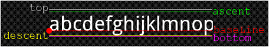
- float descent()：baseline之下至字符最低处的距离
- int breakText(char[] text, int index, int count, float maxWidth, float[] measuredWidth)： 检测一行显示多少文字
- clearShadowLayer( )：清除阴影层 其他的自行查阅文档~
2)Canvas(画布):
画笔有了，接着就到画布(Canvas)，总不能凭空作画是吧~常用方法如下：
首先是构造方法，Canvas的构造方法有两种：
Canvas(): 创建一个空的画布，可以使用setBitmap()方法来设置绘制具体的画布。
Canvas(Bitmap bitmap): 以bitmap对象创建一个画布，将内容都绘制在bitmap上，因此bitmap不得为null。
接着是
drawXXX()方法族：以一定的坐标值在当前画图区域画图，另外图层会叠加， 即后面绘画的图层会覆盖前面绘画的图层。 比如：
drawRect(RectF rect, Paint paint) ：绘制区域，参数一为RectF一个区域
- drawPath(Path path, Paint paint) ：绘制一个路径，参数一为Path路径对象
- drawBitmap(Bitmap bitmap, Rect src, Rect dst, Paint paint) ： 贴图，参数一就是我们常规的Bitmap对象，参数二是源区域(这里是bitmap)， 参数三是目标区域(应该在canvas的位置和大小)，参数四是Paint画刷对象， 因为用到了缩放和拉伸的可能，当原始Rect不等于目标Rect时性能将会有大幅损失。
- drawLine(float startX, float startY, float stopX, float stopY, Paintpaint) ： 画线，参数一起始点的x轴位置，参数二起始点的y轴位置，参数三终点的x轴水平位置， 参数四y轴垂直位置，最后一个参数为Paint 画刷对象。
- drawPoint(float x, float y, Paint paint)： 画点，参数一水平x轴，参数二垂直y轴，第三个参数为Paint对象。
- drawText(String text, float x, floaty, Paint paint) ： 渲染文本，Canvas类除了上面的还可以描绘文字，参数一是String类型的文本， 参数二x轴，参数三y轴，参数四是Paint对象。
- drawOval(RectF oval, Paint paint)：画椭圆，参数一是扫描区域，参数二为paint对象；
- drawCircle(float cx, float cy, float radius,Paint paint)： 绘制圆，参数一是中心点的x轴，参数二是中心点的y轴，参数三是半径，参数四是paint对象；
drawArc(RectF oval, float startAngle, float sweepAngle, boolean useCenter, Paint paint)： 画弧，参数一是RectF对象，一个矩形区域椭圆形的界限用于定义在形状、大小、电弧，参数二是起始角 (度)在电弧的开始，参数三扫描角(度)开始顺时针测量的，参数四是如果这是真的话,包括椭圆中心的电 弧,并关闭它,如果它是假这将是一个弧线,参数五是Paint对象；
clipXXX()方法族:在当前的画图区域裁剪(clip)出一个新的画图区域，这个画图区域就是canvas 对象的当前画图区域了。比如：clipRect(new Rect())，那么该矩形区域就是canvas的当前画图区域
save()和restore()方法： save( )：用来保存Canvas的状态。save之后，可以调用Canvas的平移、放缩、旋转、错切、裁剪等操作！ restore（）：用来恢复Canvas之前保存的状态。防止save后对Canvas执行的操作对后续的绘制有影响。 save()和restore()要配对使用(restore可以比save少,但不能多)，若restore调用次数比save多,会报错！
translate(float dx, float dy)： 平移，将画布的坐标原点向左右方向移动x，向上下方向移动y.canvas的默认位置是在（0,0）
scale(float sx, float sy)：扩大，x为水平方向的放大倍数，y为竖直方向的放大倍数
rotate(float degrees)：旋转，angle指旋转的角度，顺时针旋转
3)Path(路径)
简单点说就是描点，连线~在创建好我们的Path路径后，可以调用Canvas的drawPath(path,paint) 将图形绘制出来~常用方法如下：
- addArc(RectF oval, float startAngle, float sweepAngle：为路径添加一个多边形
- addCircle(float x, float y, float radius, Path.Direction dir)：给path添加圆圈
- addOval(RectF oval, Path.Direction dir)：添加椭圆形
- addRect(RectF rect, Path.Direction dir)：添加一个区域
- addRoundRect(RectF rect, float[] radii, Path.Direction dir)：添加一个圆角区域
- isEmpty()：判断路径是否为空
- transform(Matrix matrix)：应用矩阵变换
- transform(Matrix matrix, Path dst)：应用矩阵变换并将结果放到新的路径中，即第二个参数。
更高级的效果可以使用PathEffect类！
几个To：
- moveTo(float x, float y)：不会进行绘制，只用于移动移动画笔
- lineTo(float x, float y)：用于直线绘制，默认从(0，0)开始绘制，用moveTo移动！ 比如 mPath.lineTo(300, 300); canvas.drawPath(mPath, mPaint);
- quadTo(float x1, float y1, float x2, float y2)： 用于绘制圆滑曲线，即贝塞尔曲线，同样可以结合moveTo使用！
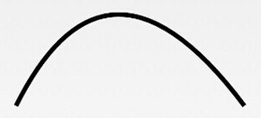
- rCubicTo(float x1, float y1, float x2, float y2, float x3, float y3) 同样是用来实现贝塞尔曲线的。 (x1,y1) 为控制点，(x2,y2)为控制点，(x3,y3) 为结束点。 Same as cubicTo, but the coordinates are considered relative to the current point on this contour.就是多一个控制点而已~ 绘制上述的曲线： mPath.moveTo(100, 500); mPath.cubicTo(100, 500, 300, 100, 600, 500); 如果不加上面的那个moveTo的话：则以(0,0)为起点，(100,500)和(300,100)为控制点绘制贝塞尔曲线
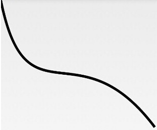
- arcTo(RectF oval, float startAngle, float sweepAngle)： 绘制弧线（实际是截取圆或椭圆的一部分）ovalRectF为椭圆的矩形，startAngle 为开始角度， sweepAngle 为结束角度。
三、动手试试：
属性那么多，肯定要手把手的撸一下，才能加深我们的映像是吧~ 嘿嘿，画图要么在View上画，要么在SurfaceView上画，这里我们在View上画吧， 我们定义一个View类，然后再onDraw()里完成绘制工作！
/**
* Created by Jay on 2015/10/15 0015.
*/
public class MyView extends View{
private Paint mPaint;
public MyView(Context context) {
super(context);
init();
}
public MyView(Context context, AttributeSet attrs) {
super(context, attrs);
init();
}
public MyView(Context context, AttributeSet attrs, int defStyleAttr) {
super(context, attrs, defStyleAttr);
init();
}
private void init(){
mPaint = new Paint();
mPaint.setAntiAlias(true); //抗锯齿
mPaint.setColor(getResources().getColor(R.color.puple));//画笔颜色
mPaint.setStyle(Paint.Style.FILL); //画笔风格
mPaint.setTextSize(36); //绘制文字大小，单位px
mPaint.setStrokeWidth(5); //画笔粗细
}
//重写该方法，在这里绘图
@Override
protected void onDraw(Canvas canvas) {
super.onDraw(canvas);
}
}
然后布局那里设置下这个View就好，下述代码都写在onDrawable中~
1）设置画布颜色：
canvas.drawColor(getResources().getColor(R.color.yellow)); //设置画布背景颜色
2）绘制圆形：
canvas.drawCircle(200, 200, 100, mPaint); //画实心圆
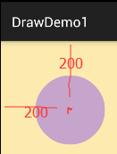
3）绘制矩形：
canvas.drawRect(0, 0, 200, 100, mPaint); //画矩形
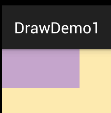
4）绘制Bitmap：
canvas.drawBitmap(BitmapFactory.decodeResource(getResources(), R.mipmap.ic_launcher), 0, 0, mPaint);
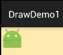
5）绘制弧形区域：
canvas.drawArc(new RectF(0, 0, 100, 100),0,90,true,mPaint); //绘制弧形区域
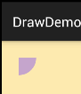
假如true改为false：
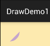
6）绘制圆角矩形
canvas.drawRoundRect(new RectF(10,10,210,110),15,15,mPaint); //画圆角矩形
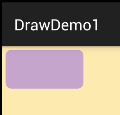
7）绘制椭圆
canvas.drawOval(new RectF(0,0,200,300),mPaint); //画椭圆
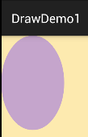
8)绘制多边形：
Path path = new Path();
path.moveTo(10, 10); //移动到 坐标10,10
path.lineTo(100, 50);
path.lineTo(200,40);
path.lineTo(300, 20);
path.lineTo(200, 10);
path.lineTo(100, 70);
path.lineTo(50, 40);
path.close();
canvas.drawPath(path,mPaint);
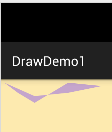
9)绘制文字：
canvas.drawText("最喜欢看曹神日狗了~",50,50,mPaint); //绘制文字
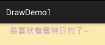
你也可以沿着某条Path来绘制这些文字：
Path path = new Path();
path.moveTo(50,50);
path.lineTo(100, 100);
path.lineTo(200, 200);
path.lineTo(300, 300);
path.close();
canvas.drawTextOnPath("最喜欢看曹神日狗了~", path, 50, 50, mPaint); //绘制文字
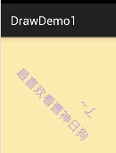
10)绘制自定义的图形：
代码来源于网上：
protected void onDraw(Canvas canvas) {
super.onDraw(canvas);
canvas.translate(canvas.getWidth()/2, 200); //将位置移动画纸的坐标点:150,150
canvas.drawCircle(0, 0, 100, mPaint); //画圆圈
//使用path绘制路径文字
canvas.save();
canvas.translate(-75, -75);
Path path = new Path();
path.addArc(new RectF(0,0,150,150), -180, 180);
Paint citePaint = new Paint(mPaint);
citePaint.setTextSize(14);
citePaint.setStrokeWidth(1);
canvas.drawTextOnPath("绘制表盘~", path, 28, 0, citePaint);
canvas.restore();
Paint tmpPaint = new Paint(mPaint); //小刻度画笔对象
tmpPaint.setStrokeWidth(1);
float y=100;
int count = 60; //总刻度数
for(int i=0 ; i <count ; i++){
if(i%5 == 0){
canvas.drawLine(0f, y, 0, y+12f, mPaint);
canvas.drawText(String.valueOf(i/5+1), -4f, y+25f, tmpPaint);
}else{
canvas.drawLine(0f, y, 0f, y +5f, tmpPaint);
}
canvas.rotate(360/count,0f,0f); //旋转画纸
}
//绘制指针
tmpPaint.setColor(Color.GRAY);
tmpPaint.setStrokeWidth(4);
canvas.drawCircle(0, 0, 7, tmpPaint);
tmpPaint.setStyle(Paint.Style.FILL);
tmpPaint.setColor(Color.YELLOW);
canvas.drawCircle(0, 0, 5, tmpPaint);
canvas.drawLine(0, 10, 0, -65, mPaint);
}
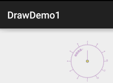
五、本节小结：
本节我们对android.graphics接口类下的三个绘图API：Canvas(画布)，Paint(画笔)，Path(路径)进行 了学习，方法有很多，别去死记，用到的时候查就好，这里我们先有个大概映像即可，自定义控件那里 我们再来慢慢纠结~好的，就说这么多，谢谢~